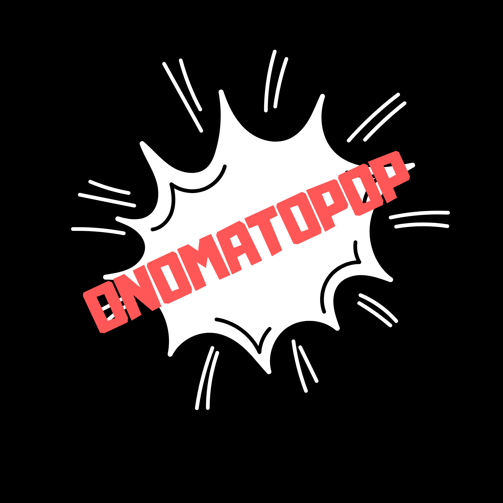

Seja bem vindo ao OnomatoPOP!!!!
FAAAAAAAALLAAA CULTURAIS! Sejam bem-vindos ao site OnomatoPOP! Aqui vamos discutir o mundo cultural, sejam filmes, séries, jogos, animes, e outras TRILHÕES DE COISAS! Nos próximo posts, vamos discutir os filmes em cartaz, então fiquem ligados!!!!
Por: Kauan B. de Paula